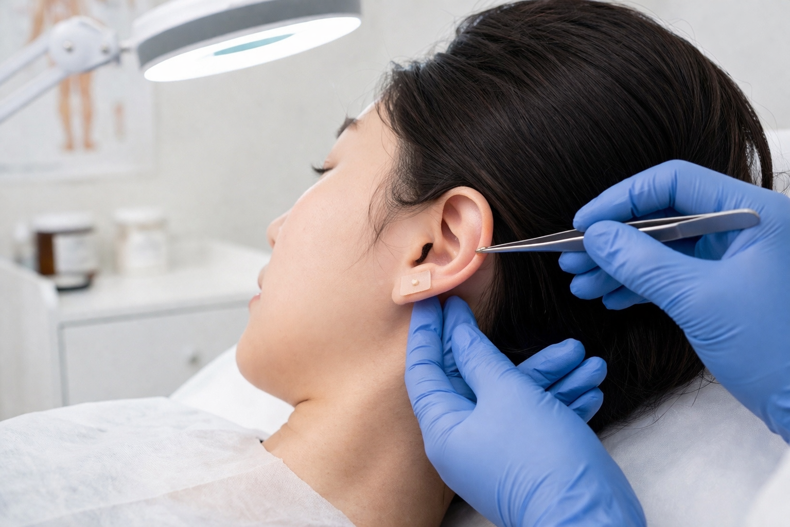
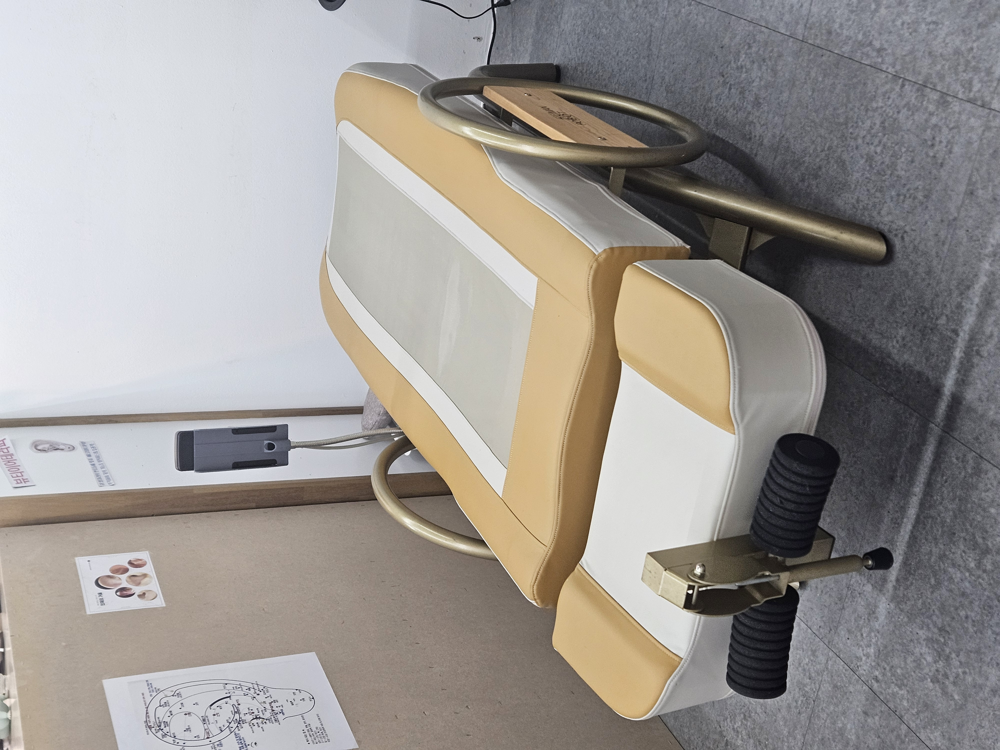
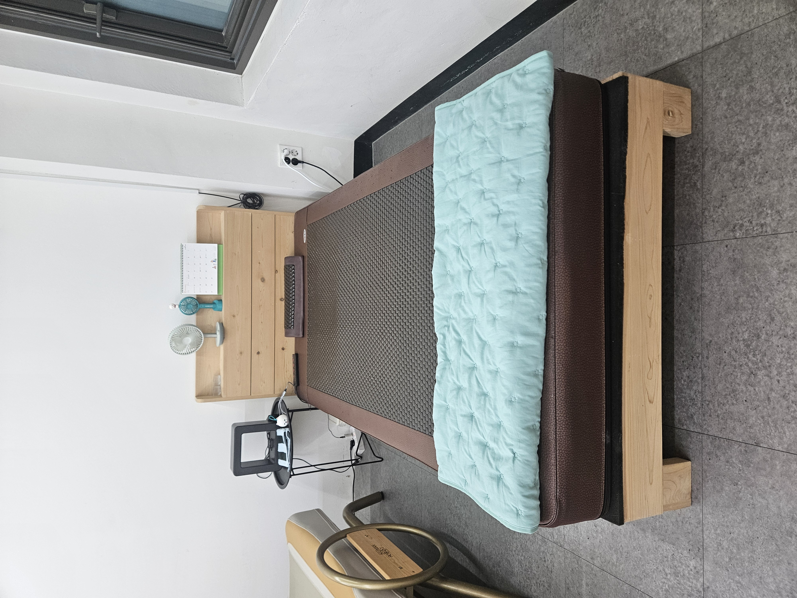
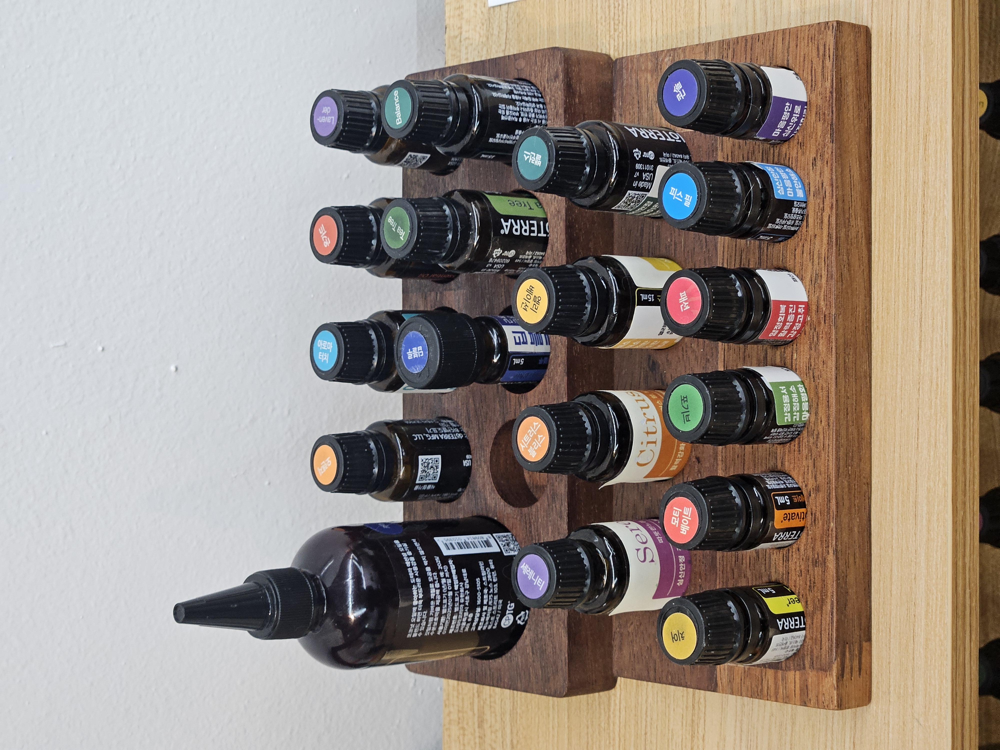

이혈테라피는 귀에 분포하는 인체의 각 장기와 연결된 수많은 혈점(이혈점)을 자극하여 기혈 순환을 돕고, 인체의 자가 치유력을 높이는 자연 요법입니다.
청담이혈의 전문 테라피스트는 고객의 상태를 면밀히 분석하고 맞춤형 이혈 자극을 통해 근본적인 건강 회복을 돕습니다.
원리: 귀에 분포하는 반사구 자극을 통한 신경계 및 경락 활성화
효과: 통증 완화, 스트레스 감소, 수면 질 개선, 호르몬 균형, 전신 순환 개선 등

원리: 직립보행으로 인해 지속적으로 가해지는 척추의 압박을 완화하기 위해, 중력의 반대 방향으로 견인하여 척추를 이완시키는 원리입니다.
관리 방법: 개인의 체질과 상태에 맞춰 시간 · 온도 · 기울기를 맞춤 설정하여 진행
기대 효과:

원리: 파동 마사지 침대는 수직·수평의 복합 파동 운동을 통해 몸 전체에 리듬감 있는 자극을 전달하여 근육과 세포를 부드럽게 깨워 줌.
또한, 그래핀 원적외선을 이용해 피부 표면이 아닌 신체 깊숙한 곳까지 열을 전달하는 심부열 작용으로 체온 상승과 함께 전신 순환을 활성화.
관리 방법: 개인의 체질과 컨디션에 맞춰 시간 (관리 지속 시간), 온도 (심부열 강도 조절), 파동 강도 및 리듬을 맞춤 설정하여, 편안하면서도 효과적인 힐링 관리를 제공.
기대 효과:
이런 분들께 추천:

청담이혈의 아로마 테라피는 순수 자연에서 얻은 프리미엄 에센셜 오일을 사용하여 심신의 깊은 이완과 조화를 돕습니다.
전문적인 마사지와 함께 아로마 향을 통해 신체적, 정신적 긴장을 완화하고 에너지를 회복시켜 드립니다.
원리: 후각을 통한 뇌 자극 및 피부를 통한 오일 성분의 인체 흡수
효과: 불안 및 긴장 완화, 기분 전환, 근육통 개선, 면역력 강화, 피부 건강 지원 등
